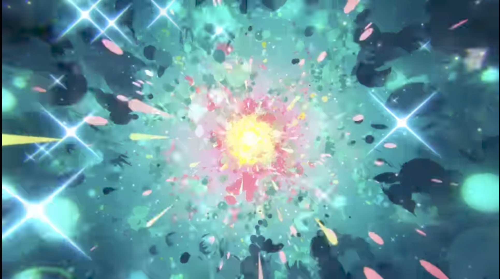

Kirakira Icon Generator
使い方:
下の画像が読み込まれたら、中心のキラキラ部分が自動的にトリミングされます
各サイズのアイコンをクリックすると、PNGファイルとしてダウンロードされます
ダウンロードしたファイルを icons/ フォルダに保存してください
元画像:

生成されたアイコン:
16x16 (icon16.png)
48x48 (icon48.png)
128x128 (icon128.png)